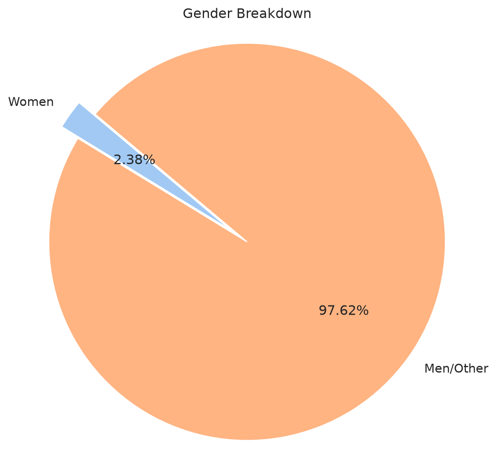
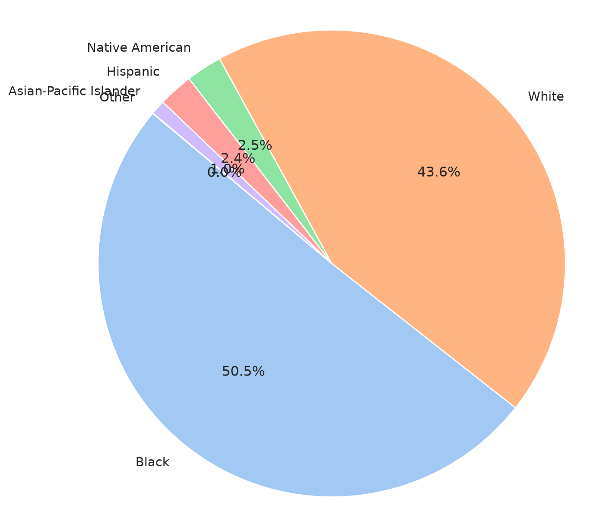
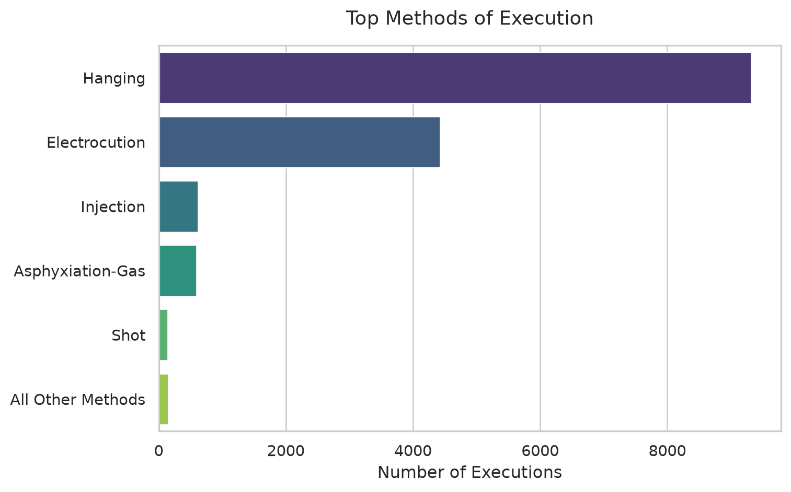
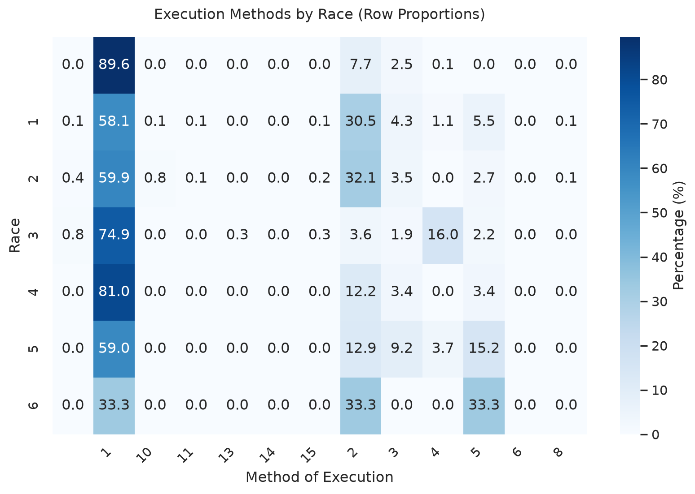

DEMO
Punishment
NAME-OF-RESEARCH-GROUP
Demo project
Introduction
This is a 100-200 word introduction to the material of the project. Ths project explores the connection, if any, between a person’s race and the method or manner of their execution by the US government.
There are a lot of public accounts of capital punishment. These have helped fuel the movement against state executions. There are a lot of first-person accounts of this work, including from the perspective of the executioner (Cabana 1998), of attorneys (Stevenson 2015). A few more sentences here that summarizes how this topic is being talked about in your sources. Consider this paragraph a sort of lit review.
ImportantThis box describes the high-level takeaway from this data exploration. Write your summary result in 1-2 (no more!) sentences
About the Data
The dataset spans 1608 - 2002. This means the median year is 1826. A few more sentences about the size and shape, and provenance (aka source) of the data.
The Process
Here I’m going to go step by step through the thinking that I did to get to my result. You ought to include as many of these as is applicable to your project. You can (and should) reuse some of the work from Stage 2 - that’s why you did it!
Data Cleaning & Preprocessing
Write how you handled missing values, outliers, categories, binning, cleaning. Literally any transformation that you did to the data in the process of doing this work.
Exploratory Data Analysis
Add 3 to 5 visualizations (e.g., correlation heatmaps, distribution plots, or scatter plots) that directly informed you analysis.
An analysis of gender showed a dataset containing mostly men.
Gender
Race
In the data’s codebook, these race has been coded numerically: 0 M Do Not Know; NA 1 White 2 Black 3 Native American 4 Asian-Pacific Il 5 Hispanic 6 Other

Methods of Execution

The Results
Explain your results and how you came to the conclusion that you have now. For example, you might show a heatmap…
Heatmap…

NOTE: This heatmap is fine, but hard to read. When I have an opportunity to polish it (hint, hint) this is one of the fixes I might make.
from scipy.stats import chi2_contingency
# 1. Remember...chi-Square requires raw counts, not percentages!
raw_crosstab = pd.crosstab(df['V5'], df['V11'])
# 2. Run the test
chi2, p_value, dof, expected = chi2_contingency(raw_crosstab)
print(f"Chi-Square Statistic: {chi2:.2f}")
print(f"P-value: {p_value:.5f}")Chi-Square Statistic: 1722.70
P-value: 0.00000The results indicate that there is a statistically significant relationship between race and method of execution. However, the spirit of the question could still be answered: what, if any, stories about race does this dataset tell?
Result 1: Compensation for Execution
This is a paragraph contextualizing the information I’m about to show the reader. In this case, I might talk about the end of chattel slavery in the US, and how chattel slavery put a literal dollar value on each human being. This dataset reveals that some people were killed by the state for a crime, and the state compensated the human trafficker/enslaver for the “loss” of this value (Madeo 2026).
# 2. Define the columns we want to extract and what we want to rename them to
column_mapping = {
'V7': 'Name',
'V11': 'Method of Execution',
'V5': 'Race',
'V10': 'Crime',
'V20': 'Compensation Case',
'V14': 'Year'
}
# 3. Filter for cases where V20 is '1' (stored as a string in the TSV)
compensated_cases = df[df['V20'] == '1'].copy()
total_compensations = len(compensated_cases)
print(total_compensations)
# 4. Filter columns and rename
execution_table = compensated_cases[list(column_mapping.keys())].rename(columns=column_mapping)
# 5. Display the total count and the first 10 rows
print(f"Total compensated cases found: {len(execution_table)}")
print("-" * 50)
print(execution_table.head(10))296
Total compensated cases found: 296
--------------------------------------------------
Name Method of Execution Race Crime Compensation Case Year
20 HORBERT (MARKS) 1 2 1 1 1833
21 SOLOMON (MEREDITH) 1 2 1 1 1833
34 (HOLLEY) 1 2 1 1 1836
35 (HOLLEY) 1 2 1 1 1836
36 GEORGE 1 2 1 1836
37 HORRIS 1 2 1 1836
38 MOSES (GANTT) 1 2 1 1836
47 (LAWLER) 1 2 1 1836
50 CLARKE (MASSEY) 1 2 1 1837
51 DELSEY (HARKINS) 1 2 1 1837Result 2: Compensation was not linked to a particular crime
I’d include more text here about what this result means. I’d ask myself what I’m trying to have my readers undesrtand and why I’m showing these results in particular
# 3. Create a dictionary to map the numeric crime codes (V10) to their text descriptions
crime_map = {
'1': 'Murder',
'2': 'Rape',
'8': 'Slave Revolt',
'16': 'Arson',
'22': 'Attempted Rape',
'33': 'Poisoning',
'36': 'Unspecified Felony',
'40': 'Attempted Murder',
'43': 'Theft-Stealing',
' ': 'Not Recorded / Unknown'
}
# Map the crime descriptions to a new column for ease
compensated_cases['Crime Description'] = compensated_cases['V10'].map(crime_map)
# Count the occurrences of each crime and display the results
crime_summary = compensated_cases['Crime Description'].value_counts().reset_index()
crime_summary.columns = ['Crime', 'Number of Compensated Cases']
print(crime_summary.to_string(index=False)) Crime Number of Compensated Cases
Not Recorded / Unknown 185
Murder 49
Unspecified Felony 47
Attempted Murder 4
Arson 3
Attempted Rape 3
Rape 2
Theft-Stealing 1
Slave Revolt 1
Poisoning 1Result 3: 17% of executions resulted in compensation for enslavers
Here’s more high level text about this result that, ideally, would include a few more citations. You are likely best off not showing the python code (unless you’re trying to make a point), so you can hide it with #| echo: false, just like I did above and below
Total number of executions with occupation 'Slave': 1754
Number of those that were compensated cases: 284
Percentage: 16.19%Note: At this point I’m noticing that there are a few data discrepancies that we should clear up, but I might not have time to do it in this first draft. That’s okay - I could note them here
How to understand these results
Include more writing about how a viewer should understand the results you’re showing them, and, where appropriate, include citations for your results.
References
Cabana, Donald A. 1998. Death At Midnight: The Confession of an Executioner. Northeastern.
Madeo. 2026. Jan. 18, 1771 \(\vert\) White Enslavers Receive Money for Execution of Enslaved People in NC. https://calendar.eji.org/racial-injustice/jan/18.
Stevenson, Bryan. 2015. Just Mercy: A Story of Justice and Redemption. Reprint edition. Spiegel & Grau.